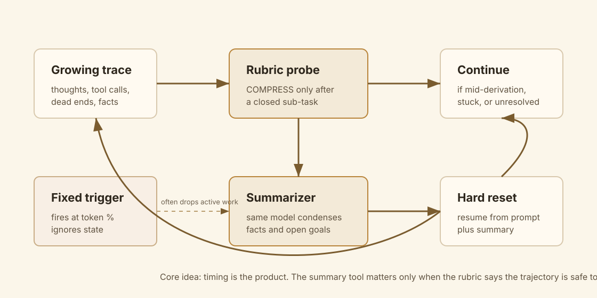
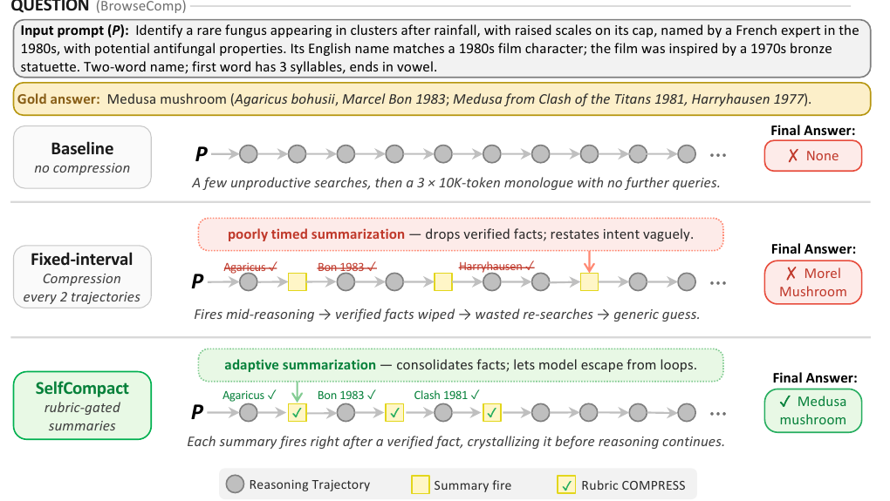
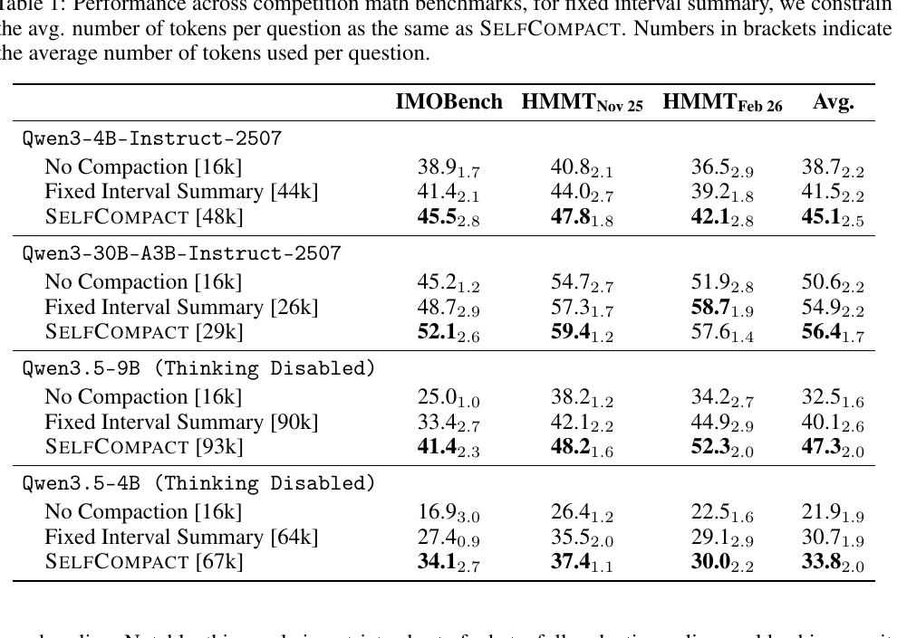
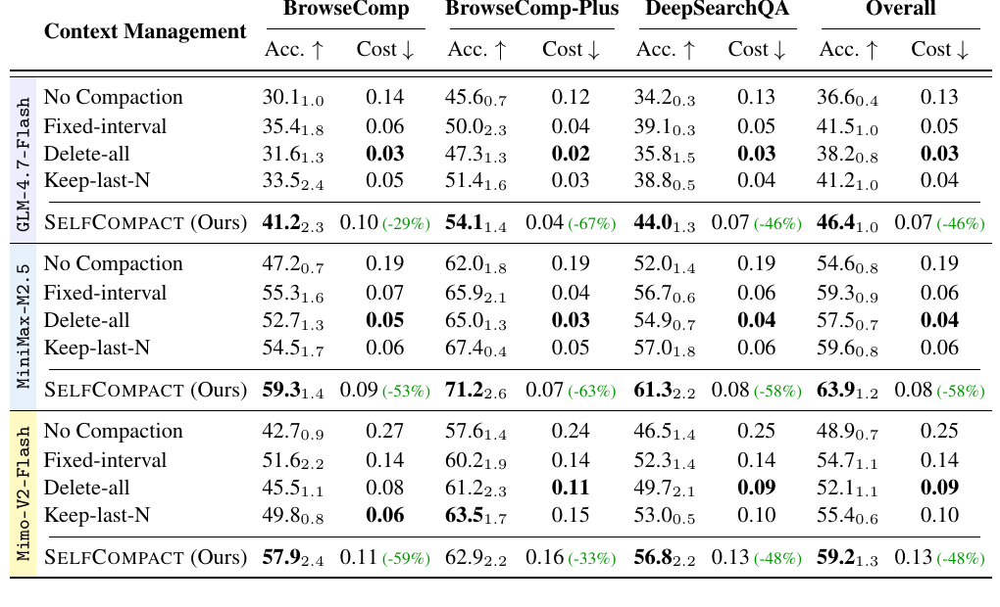
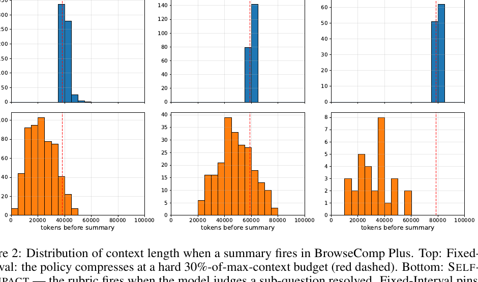
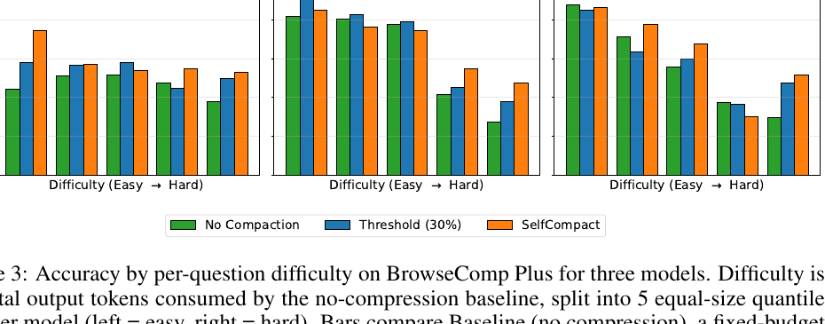

SelfCompact：上下文压缩的关键不是会总结，而是什么时候总结
- Paper: Self-Compacting Language Model Agents
- Version: arXiv v1, 2026-06-22
- 类型: inference-time agent scaffold / context compaction / long-horizon reasoning
- 关键词: SelfCompact, context rot, rubric-gated summarization, BrowseComp, DeepSearchQA, fixed-interval compaction
读法：给人和 agent 的路标
这篇应该按 context engineering 来读。它不是提出一个更强 summarizer，而是在问：长轨迹 agent 什么时候应该把历史压缩成摘要？
给 agent 之后检索，关键词是：SelfCompact、rubric-gated compaction、COMPRESS CONTINUE、context rot、BrowseComp Medusa mushroom、fixed interval summary、KV cache reuse。
一句话判断
SelfCompact 的核心结论是：固定 token 阈值压缩太粗糙，容易在推理或搜索还没闭合时删掉关键中间事实；如果给模型一个轻量 rubric，让它只在“子任务已解决、轨迹开始收敛”时触发总结，就能在不训练模型的情况下提升数学和搜索 agent 表现，并降低 30% 到 70% 的 per-question cost。
图表优先读法
| 先看 | 图/表 | 它回答的问题 |
|---|---|---|
| 1 | Figure 1：BrowseComp case | 固定间隔总结为什么会把已验证事实删掉？ |
| 2 | SelfCompact rubric loop | 系统怎么判断 COMPRESS 还是 CONTINUE？ |
| 3 | Table 1 / Table 4 | 数学推理和搜索 agent 上是否真的涨分、是否更便宜？ |
| 4 | Figure 2 / Figure 3 | SelfCompact 是不是只是更早压缩？它主要帮哪类难题？ |
这篇最好的读法不是从 Table 1 开始，而是先看 Figure 1 的 Medusa mushroom 例子：一旦意识到“摘要时间点错了会删掉刚验证出的事实”，后面的 rubric、KV cache 成本、难度分桶都会自然连起来。
我整理的机制图

SelfCompact 有两个组件：
| 组件 | 做什么 |
|---|---|
| Summarization tool | 把当前 prompt + trajectory 压成 summary，再从 prompt + summary 继续生成 |
| Rubric probe | 定期问模型：现在应该 COMPRESS 还是 CONTINUE |
关键点：summarizer 和 rubric judge 都是同一个模型，不需要外部 verifier，也不需要 fine-tuning。
Algorithm 1 的流程可以压成：
generate next step
if final answer: return
if probe interval reached:
append rubric prompt
model returns COMPRESS or CONTINUE
if COMPRESS:
append summarizer prompt
model writes summary
reset context to original prompt + summary
else:
remove probe and continue with full trajectory
BrowseComp case：为什么固定压缩会错
论文用一个 BrowseComp 问题做 motivating example：答案是 Medusa mushroom，需要验证多个事实链条，比如 Agaricus、Bon 1983、1981 电影角色、1970s bronze statuette 等。

这张图是全篇最值得先看的地方。它把三种轨迹压到同一个问题里：
- No compaction 没有丢信息，但会把预算烧在无效搜索和长 monologue 上。
- Fixed interval 在固定轨迹数后触发总结，正好发生在事实还没有闭合的时候，于是
Agaricus、Bon 1983、Harryhausen这些证据被擦掉，最后猜成Morel Mushroom。 - SelfCompact 只在一个事实验证完成后触发总结，相当于把局部证据“固化”进短摘要，后续继续搜索时不会反复丢线索。
三种策略的行为：
| 策略 | 发生了什么 |
|---|---|
| No compaction | 做了一些无效搜索，然后进入超长 monologue，最后没答出来 |
| Fixed interval | 每两个搜索轨迹压缩一次，但在中途删掉已验证事实，最后猜成 Morel Mushroom |
| SelfCompact | 每次在一个事实闭合后总结，把已验证事实固化，最后答对 Medusa mushroom |
这就是这篇最核心的 intuition：坏摘要不是摘要能力差，而是摘要时间点错了。
数学推理结果
Table 1 在 competition math 上比较 no compaction、fixed interval summary 和 SelfCompact。fixed interval 的 token budget 被约束到和 SelfCompact 接近。

| Model | No compaction avg | Fixed avg | SelfCompact avg |
|---|---|---|---|
| Qwen3-4B-Instruct-2507 | 38.7 | 41.5 | 45.1 |
| Qwen3-30B-A3B-Instruct-2507 | 50.6 | 54.9 | 56.4 |
| Qwen3.5-9B, thinking disabled | 32.5 | 40.1 | 47.3 |
| Qwen3.5-4B, thinking disabled | 21.9 | 30.7 | 33.8 |
最显著的是 Qwen3.5-9B：平均从 32.5 到 47.3。论文摘要里的 “up to 18.1 points” 对应 IMOBench 上从 25.0 到 41.4。
Table 3 还有一个 oracle 分析：在 Qwen3-4B 的 IMO-Answerbench 上，如果 fixed interval 能 oracle 地跳过“当前答案已正确”的 case，准确率可到 52.9，说明 adaptive compaction 还有空间。
搜索 agent 结果
Table 4 覆盖 BrowseComp、BrowseComp-Plus、DeepSearchQA，评估 150 subsampled questions per benchmark。

| Model | No compaction overall | Fixed overall | SelfCompact overall | Cost change vs no compaction |
|---|---|---|---|---|
| GLM-4.7-Flash | 36.6, USD 0.13 | 41.5, USD 0.05 | 46.4, USD 0.07 | -46% |
| MiniMax-M2.5 | 54.6, USD 0.19 | 59.3, USD 0.06 | 63.9, USD 0.08 | -58% |
| MiMo-V2-Flash | 48.9, USD 0.25 | 54.7, USD 0.14 | 59.2, USD 0.13 | -48% |
BrowseComp-Plus 上提升尤其清楚：
- GLM-4.7-Flash: 45.6 -> 54.1, cost 0.12 -> 0.04；
- MiniMax-M2.5: 62.0 -> 71.2, cost 0.19 -> 0.07；
- MiMo-V2-Flash: 57.6 -> 62.9, cost 0.24 -> 0.16。
这说明 rubric probe 的额外调用没有让成本上升，反而因为后续 prompt 只 attend summary，整体成本下降。
触发时机和难度分桶

Figure 2 说明 SelfCompact 并不是“把 30% 阈值换成另一个固定阈值”。固定间隔方法的触发点天然挤在红色虚线附近；SelfCompact 的触发点分布更散，因为它看的是子问题是否闭合，而不是 token 是否到点。GLM-4.7-Flash 上 SelfCompact 经常更早压缩，MiniMax-M2.5 上更接近中后段，MiMo-V2-Flash 的样本少但同样不是硬阈值形态。

Figure 3 更能解释适用边界：easy bins 上三种策略差别不大，SelfCompact 的优势主要出现在最难的分桶。换句话说，它解决的不是短任务的“省 token”，而是长搜索里证据链不断堆积、上下文开始腐烂的问题。
为什么 rubric 必须存在
作者做了一个很关键的 ablation：去掉 rubric，让模型自己随时决定是否总结。
| GLM-4.7-Flash method | BrowseComp | BrowseComp-Plus | DeepSearchQA | Avg |
|---|---|---|---|---|
| No compaction | 30.1 | 45.6 | 34.2 | 36.6 |
| Fixed interval | 35.4 | 50.0 | 39.1 | 41.5 |
| SelfCompact w/o rubrics | 33.6 | 51.9 | 37.6 | 41.0 |
| SelfCompact | 41.2 | 54.1 | 44.0 | 46.4 |
Qwen3-4B-Instruct-2507 的 IMOBench 也类似：no compaction 38.9，w/o rubric 40.9，SelfCompact 45.5。
结论很直接：不是“给模型一个 summary tool”就行。模型如果没有明确判断标准，会在不该总结时总结，或者该总结时不总结。
成本机制
SelfCompact 之所以便宜，靠的是 KV cache reuse：
- rubric probe 是 append 到现有 context 后面，只需要生成一个短 verdict；
- summarizer 也 append 到现有 context，不需要重新 prefill 全轨迹；
- 一旦压缩，后续调用 attend 的是短 summary，而不是完整历史。
论文给出的直觉 break-even 是：如果原轨迹长度和 summary 长度比例 L / l > 10，压缩通常值得。搜索任务里这个比例经常满足。
我怎么判断
可信之处
- 问题非常真实：context rot 和长轨迹垃圾信息是 agent 系统里的日常痛点。
- 对比公平：数学实验把 fixed interval 的 token budget 匹配到 SelfCompact 附近。
- 有 cost accounting：主文和 appendix 都报 token/cost，不只是准确率。
- ablation 抓住核心：rubric 是真正贡献，不是 summarizer 本身。
需要警惕
- rubric 是手写 scaffold：不同任务需要不同 rubric，泛化靠工程。
- summary 质量仍是瓶颈：如果模型总结时漏掉关键证据，后续仍会失败。
- 无训练版本只是第一步：更强的做法可能是让模型通过 RL 学会何时/怎么 compact。
- 对短任务收益有限：Figure 3 显示 easy bins 三种策略差不多，SelfCompact 主要帮长难任务。
对我的价值
这篇可以直接进入自己的 agent harness 设计：
不要只按 token 阈值 auto-compact
-> 定义任务态 rubric
-> 只有 subgoal closed / evidence consolidated 才压缩
-> summary 必须保留已验证事实、未解决问题、下一步计划
对 paper-reading agent 也很有用：读长论文或综述时，不应该每隔固定 token 总结，而应该在“一个 section 的 claim/evidence/limitation 闭合”后总结。
一句话收束
SelfCompact 这篇最好的地方是把“上下文管理”从长度问题改成状态问题：不是满了才整理，而是事情告一段落时就把有用信息固化下来。